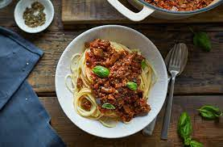

Home
Vegan Bolognese

Go mental for lentils with this tasty meal
Ingredients
- Pasta of your choosing
- Can of lentils
- Carrots
- Can of diced tomatos
- mixed herbs
Steps
- Dice carrots and onions
- Sautee onions and carrots until brown
- Deglaze pan with redwine
- Add tin tomatos and strained lentils
- Add mixed herbs and leave to simmer
- Boil Pasta until Al dente and add 1 cup of pasta water to bolognese mix
- When bolognese is at desired consistency palte a bed of pasta and top with Bolognese
- (optional) Garnish with Chopped parsley or basil leaves